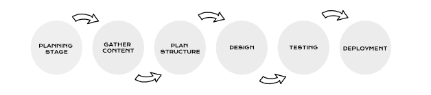

Web design encompasses many different skills and disciplines in the production and maintenance of websites. The different areas of web design include web graphic design; user interface design; authoring, including standardised code and proprietary software; user experience design; and search engine optimization.

How to Learn Web Design: What Are The Tech Skills You Need to Know to Become a Web Designer?
First, let’s go over the technical side of becoming a web designer.
1. Visual Design
It might seem obvious that you need design knowledge to be a web designer, but what exactly does that mean? Well, web design is actually a subset of the larger field of visual design, so it makes sense to start there.
2. UX
UX stands for user experience, or how people feel (calm, frustrated, etc.) when they use a website. Above all else, UX design is about approaching your designs from a user-friendly and user-first perspective